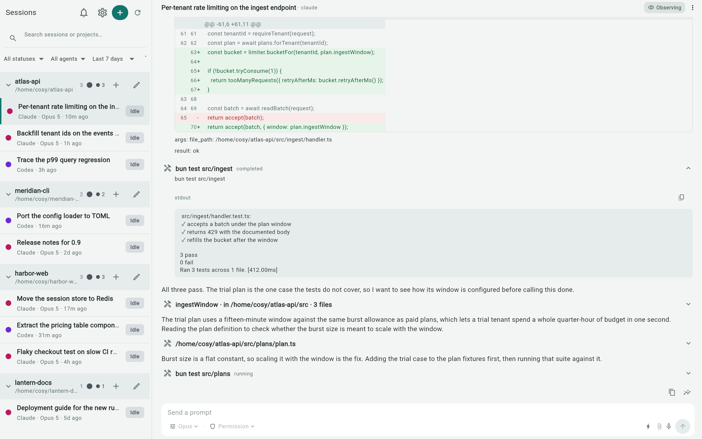
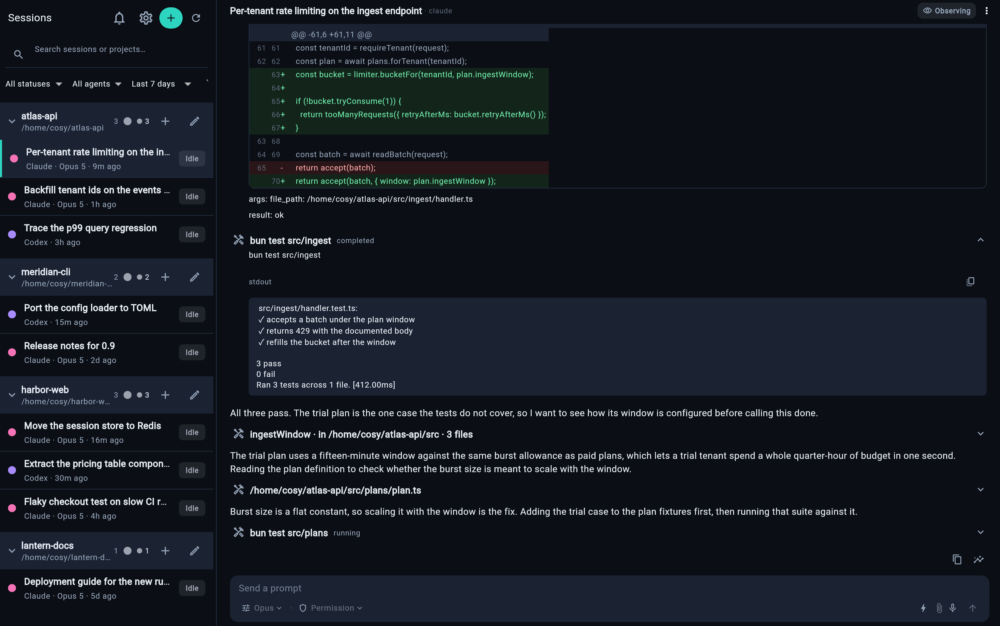
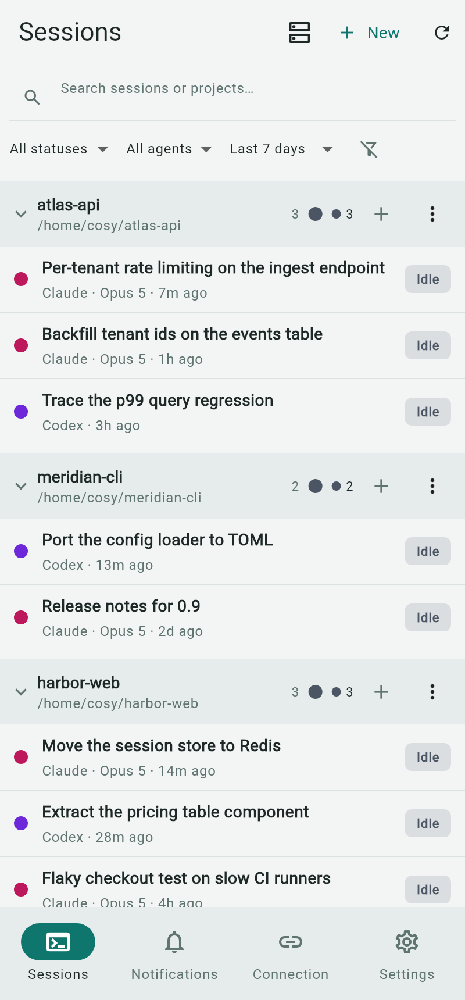
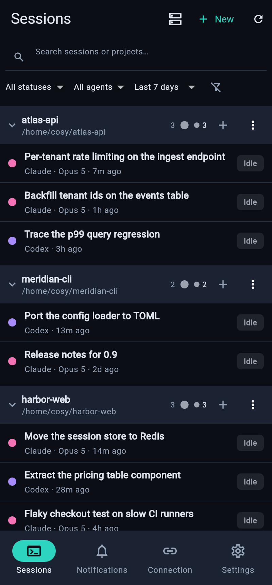
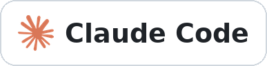
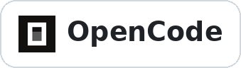
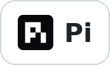

Code anywhere.
Sync everywhere.
Synchronize your agents — from CLI to GUI, from desktop to phone.
Pick up right where you left off, anywhere. cosyncing keeps your coding agents in sync across your own network.
Install the server, download a client
Prerequisites: Tailscale on every device; Bun 1.3.8+ and npm on the server. Tokdash is strongly recommended for quota tracking. See the full prerequisites.
# Tailscale signed in; Bun 1.3.8+ and Node.js/npm installed $ npm install --global cosyncing $ cosyncing setup # After setup, cosy is the shorthand for cosyncing $ cosy pair
Then download a client for each device you want to use it from. Builds for Windows, macOS, Linux, and Android are published on GitHub Releases.
Desktop at your desk, phone in your pocket
The same sessions, the same inbox, the same take-over. The source tree and CI cover six client targets: Android, iOS, Linux, macOS, Windows, and the web. Packaged Android and desktop clients are available from GitHub Releases. iOS will follow later through TestFlight.




On Windows, run the server inside WSL — a supported Linux host.
The web client ships with cosyncing and is served by your own server at /cosy/.
The agent keeps working. Every screen keeps up.
Every line lands in the app the moment the agent writes it. Send a prompt from any device — the terminal and the app never disagree.
cosyncing app ⇸ agent CLI — live



Every session, within reach
The server watches your agents where they already run and serves a client that shows each session — grouped by project, with its transcript, diffs, commands, and prompts.
Every project, one space
Be the orchestrator of all your agents — working, needs-input, and idle states at a glance. Open a session to read the transcript, inspect diffs, and follow tool calls as they happen.
Attention inbox
Permission requests, agent questions, and finished runs land in one multi-server inbox.
True sync
Prompt from the app while the terminal keeps running — both sides stay in lockstep for Codex, OpenCode, and Pi. Claude Code sessions are read-only until you take over.
Explicit pairing
Devices are granted access by a five-minute, one-use QR — listed and revoked from the CLI.
Scheduled messages
Queue a prompt to land at a set time — the agent picks it up right on schedule.
Three steps, no account
Run the server
cosyncing setup shows exactly what it will change, then applies the whole plan or none of it.
Pair a device
cosyncing pair prints a one-use QR. Scan it from any client to grant that device access.
Keep moving
Answer prompts, read transcripts, or take over — from a browser, phone, or desktop on your network.
Your machine. Your network. Your data.
Server state stays on the machine that runs it. Session content is sent only to authenticated clients over the network you choose.
No hosted relay
No cosyncing-operated service sits in the connection path. There is no analytics or advertising telemetry. Optional integrations contact only services you choose.
Revocable by default
cosyncing devices list shows paired devices; devices revoke <id> revokes one.
Every question, one inbox
When an agent needs you, it lands in the Attention inbox. Answer from whichever device is in your hand.
- Permission requests with full command context — approve or dismiss in one tap.
- Agent questions keep the session attached, so answers land where the agent waits.
- Finished runs — long tasks ping you when they complete, not only when they wait.
- Multi-server — every paired server reports into the same list.